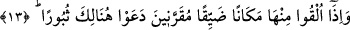
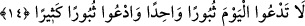
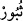

13. Elleri boyunlarına bağlı olarak onun (cehennemin) dar bir yerine atıldıkları
zaman, oracıkta yok oluvermeyi isterler.
“Elleri boyunlarına” zincirlerle “bağlı olarak” veya şeytanlarıyla birlikte üst üste
zincirlerle bağlanarak “onun (cehennemin) dar bir yerine atıldıkları zaman,” Dar bir
mekânın zikredilmesi sıkıntının şiddetinin mekânın darlığıyla birlikte daha da arttığını
ifâde etmektedir. Çünkü rahatlık ve sevinç genişlikten kaynaklanır. Cennetin genişliğinin
gökyüzü ve yeryüzü kadar olduğunun belirtilmesinin sır ve hikmeti de bundandır.
Bilesin ki mızrak ucunun mızrağa dar geldiği gibi cehennem de onlara dar gelecektir.
Ya da onların hâli duvardaki kazık ve çivi gibi olacak ve azâbları şiddetli darlıkla
birlikte katlanacaktır. Bu durum onların kalblerinin dünyada dar olmasından, darlığı
sebebiyle kalblerinde îman bulunmayışındandır.
“Oracıkta” bu korkunç yerde ve korkunç vaziyet karşısında “yok oluvermeyi” ölümü
ve helâk olmayı “isterler.” Kendilerine çağırırlar. “ felâket ve helâk demektir. Bu
kelimeyi, helâki arzu eden kimse söyler. Orada helâk olmayı isteyerek “Ey Ölüm! Ey
belâ! Ey Helâk! Gel. İşte senin zamanın!” diye bağırırlar. Bir hadîste şöyle
buyurulmuştur: “Kıyâmet günü ilk defa ateşten elbise giydirilecek olan İblîs’tir.
Elbisenin bir kısmı kaşları üzerindedir. Şeytan arkasında avânesi olduğu halde o
elbiseyi çekmeye çalışır ve “Ey Ölüm” diye bağırır. Avânesi de: “Ey Ölüm” diye
bağırırlar. Sonunda cehennemin başına varırlar İblis: “Ey Ölüm” diye bağırır.
Avânesi de: “Ey Ölüm” diye bağırırlar.”[199]
14. (Onlara şöyle denir:) Bugün (yalnız) bir defa yok olmayı istemeyin; aksine
birçok defalar yok olmayı isteyin!
Bunun üzerine Allah Teâlâ tarafından veya meleklerin diliyle azâblarının ebedî
olduğunu belirtmek için onlara şöyle denir: “Bugün (yalnız) bir defa yok olmayı
istemeyin;” Bir tek ölümü çağırmakla yetinmeyin. “aksine birçok defalar yok olmayı
isteyin!” Bu ölümün çok olmasından değil, ölümle ilgili duâlarının çok olması
bakımındandır. Çünkü ölüm olarak çağırdıkları şey hadd-i zâtında ve gerçekte birdir.
Dolayısıyla onu bir defa istemeyin, pek çok defa isteyin. Çünkü içinde bulunduğunuz
azâb son derece şiddetli ve uzun müddetli olduğundan her an bu isteğin tekrar
edilmesini gerektirmektedir.